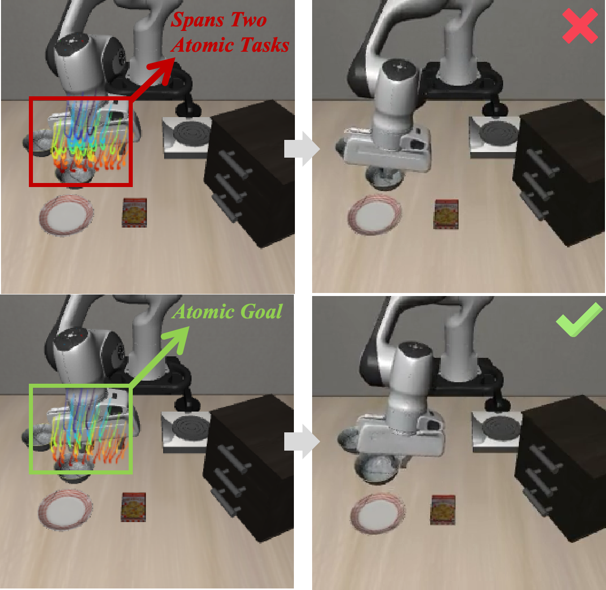

Anonymous Supplementary Material
Anonymous supplementary page for reviewer reference.

Table A. Statistical robustness of real-world tasks. Success rates (%). Quantitative results of VLAs for fine-tuned robotic manipulation tasks on the LIBERO benchmark. Success rates are reported with 95% Wilson score confidence intervals; completion times are reported as mean ± standard deviation. Best results are in bold. N/A indicates that only one successful trial was observed, so the sample standard deviation is undefined.
| Method | Pick-and-Place Succ. ↑ | Pick-and-Place Time (s) ↓ | Stack Succ. ↑ | Stack Time (s) ↓ | Assemble Succ. ↑ | Assemble Time (s) ↓ | Drawer Succ. ↑ | Drawer Time (s) ↓ | Avg. Succ. ↑ |
|---|---|---|---|---|---|---|---|---|---|
| DP | 60.0 (38.7/78.1) | 31.0 ± 2.0 | 20.0 (8.1/41.6) | 26.4 ± 1.6 | 25.0 (11.2/46.9) | 34.2 ± 2.2 | 5.0 (0.9/23.6) | 61.2 ± N/A | 27.5 (18.9/38.1) |
| w/ RoboFlow4D | 80.0 (58.4/91.9) | 30.0 ± 1.8 | 25.0 (11.2/46.9) | 26.2 ± 1.6 | 40.0 (21.9/61.3) | 31.0 ± 2.0 | 15.0 (5.2/36.0) | 60.0 ± 2.5 | 40.0 (30.0/51.0) |
| Δ | +20.0 | -1.0 | +5.0 | -0.2 | +15.0 | -3.2 | +10.0 | -1.2 | +12.5 |
| DiT | 70.0 (48.1/85.5) | 32.5 ± 2.0 | 20.0 (8.1/41.6) | 28.1 ± 1.8 | 30.0 (14.5/51.9) | 35.1 ± 2.2 | 10.0 (2.8/30.1) | 62.2 ± 2.8 | 32.5 (23.2/43.4) |
| w/ RoboFlow4D | 90.0 (69.9/97.2) | 31.0 ± 1.8 | 25.0 (11.2/46.9) | 26.8 ± 1.6 | 40.0 (21.9/61.3) | 33.2 ± 2.0 | 20.0 (8.1/41.6) | 62.0 ± 2.5 | 43.8 (33.4/54.7) |
| Δ | +20.0 | -1.5 | +5.0 | -1.3 | +10.0 | -1.9 | +10.0 | -0.2 | +11.3 |
Table B. ManiSkill3 Results. Success rates (%). Each task is evaluated over 100 trials. Best results are in bold and second-best results are underlined.
| Method | Push | Pick | Stack | Avg. |
|---|---|---|---|---|
| BC (Mandlekar et al., 2021) | 26.0 ± 3.0 | 1.0 ± 1.0 | 0.0 ± 0.0 | 9.0 ± 1.3 |
| ACT (Zhao et al., 2023) | 30.0 ± 5.0 | 2.0 ± 1.7 | 1.0 ± 1.0 | 11.0 ± 1.5 |
| OpenVLA (Kim et al., 2024) | 10.0 ± 3.0 | 0.0 ± 0.0 | 2.0 ± 1.7 | 4.0 ± 1.2 |
| DP (Chi et al., 2023) | 31.0 ± 5.0 | 3.0 ± 1.7 | 3.0 ± 1.7 | 12.3 ± 1.8 |
| w/ RoboFlow4D | 41.0 ± 5.0 | 13.0 ± 3.6 | 12.0 ± 3.0 | 22.0 ± 2.4 |
| Δ | +10.0 | +10.0 | +9.0 | +9.7 |
| DiT (Hou et al., 2024) | 32.0 ± 5.0 | 4.0 ± 2.0 | 2.0 ± 1.7 | 12.7 ± 1.7 |
| w/ RoboFlow4D | 45.0 ± 5.0 | 14.0 ± 3.0 | 12.0 ± 3.0 | 23.7 ± 2.3 |
| Δ | +13.0 | +10.0 | +10.0 | +11.0 |
Table C. Additional 40-trial real-world evaluation for our methods. Success rates (%). Supplementary real-world experiment with additional trials for our methods.
| Method | Pick-and-Place Succ. ↑ | Pick-and-Place Time (s) ↓ | Stack Succ. ↑ | Stack Time (s) ↓ | Assemble Succ. ↑ | Assemble Time (s) ↓ | Drawer Succ. ↑ | Drawer Time (s) ↓ | Avg. Succ. ↑ | Avg. Time (s) ↓ |
|---|---|---|---|---|---|---|---|---|---|---|
| DP + RoboFlow4D (40 trials) | 80.0 (65.2/89.5) | 30.1 ± 1.9 | 27.5 (16.1/42.8) | 26.1 ± 1.5 | 40.0 (26.3/55.4) | 31.1 ± 2.0 | 15.0 (7.1/29.1) | 60.2 ± 2.5 | 40.6 (33.3/48.4) | 36.9 |
| DiT + RoboFlow4D (40 trials) | 87.5 (73.9/94.5) | 31.0 ± 1.8 | 30.0 (18.1/45.4) | 26.8 ± 1.6 | 40.0 (26.3/55.4) | 33.1 ± 2.0 | 20.0 (10.5/34.8) | 61.9 ± 2.5 | 44.4 (36.9/52.1) | 38.2 |